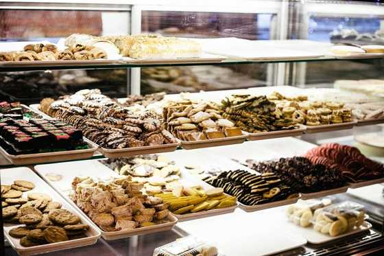
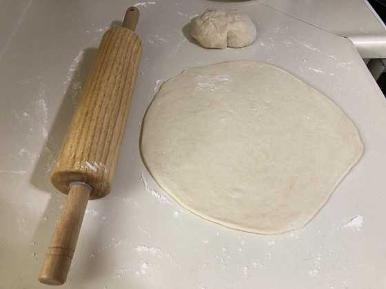
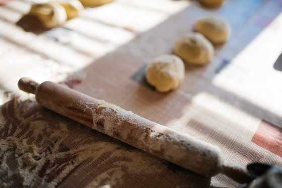

滋賀県大津市鳥居川町 / ベーカリーカフェ
夜が明ける前から、
生地のおいしさと向き合う朝。
パン生地本来の美味しさを大切に。焼きたてをテイクアウトでも、イートインでも。
お店のこと
「生地本来の美味しさ」を、朝いちばんに。
bakery&cafe kuribou(くりぼう)は、滋賀県大津市鳥居川町にあるベーカリーカフェです。Instagramのプロフィールでは、「パン生地本来の美味しさを大切にしている」ことが紹介されており、お持ち帰りとイートインのどちらにも対応しています。
投稿では、早朝からの営業案内や、「パン定食」「飲めるカレーパン」といったメニューが紹介されています。朝の早い時間から焼きたてのパンを楽しめるお店、というのがこのページの出発点です。
情報源: kuribou 公式Instagram / 食べログ(ジャンル:パン)
店名の意味・由来は確認できていないため記載していません。見出しや配色(夜明け前の藍と、焼き上がりの色)は制作側のイメージです。
メニュー
パンと、朝のひと皿と。
写真はフリー素材のイメージです。お店で提供しているものそのものではありません。








口コミ
お客様の声(イメージ例)
イメージ例
朝の早い時間に焼きたてが食べられるのがうれしい。生地そのものの味がしっかりしていました。
イメージ例
テイクアウトで買って、ベンチで朝ごはん。休日の楽しみになりそうなお店です。
イメージ例
パンに合う飲み物もあって、ゆっくりイートインできました。また寄りたいです。
上記は制作側が作成したイメージ例であり、実在のお客様の声ではありません。
アクセス
お店の情報
| 店名 | bakery&cafe kuribou(くりぼう) |
|---|---|
| 所在地 | 〒520-0854 滋賀県大津市鳥居川町8-5-3 |
| 電話 | 準備中 |
| 営業時間 | 準備中(最新の営業日・時間はInstagramでご確認ください) |
| 定休日 | 準備中 |
| SNS | Instagram @kuri_bou2400 |
写真について
掲載写真はフリー素材のイメージであり、店舗の実際の様子・商品ではありません。実際の写真はご提供いただいたものに差し替えます。
写真クレジット
- bread-basket: French bread / Marianne Casamance / CC BY-SA 4.0 / Wikimedia Commons
- croissants: Croissants au beurre / Herry Wibisono / CC0 1.0 / Wikimedia Commons
- sourdough: Slices of sourdough bread / Angel Ganev / CC BY 2.0 / Wikimedia Commons
- brioche: Brioche Nanterre / Msayago10 / CC BY-SA 4.0 / Wikimedia Commons
- rolls-tray: Pretzel rolls on a tray / Infrogmation / CC BY-SA 4.0 / Wikimedia Commons
- baguette-butter: Baguette and butter curls / Pru.mitchell / CC BY-SA 4.0 / Wikimedia Commons
- toast-jam: Toast with strawberry jam / MOs810 / CC BY-SA 4.0 / Wikimedia Commons
- dough-rolling-pin: Dough and a rolling pin (Oak Hill, Fairfax County) / Famartin / CC BY-SA 4.0 / Wikimedia Commons
- rolling-pin-buns: Rolling pin and dough in the kitchen / Nenad Stojkovic / CC BY 2.0 / Wikimedia Commons
- jam-toast: Jam and toast / Harry Wood / CC0 1.0 / Wikimedia Commons
- rolls-basket: Basket of rolls / Daniel Sone / パブリックドメイン (Public Domain Mark) / Wikimedia Commons
- latte: The cup of coffee on a wooden table / Artem Beliaikin / CC BY 2.0 / Wikimedia Commons
- pastry-case: Trays of Baked Goods / Greta Punch (gretap) / CC0 1.0 / Wikimedia Commons
- coffee-black: Cup of coffee on café table / Ssu / CC BY-SA 4.0 / Wikimedia Commons